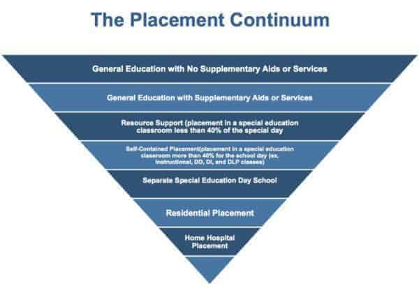
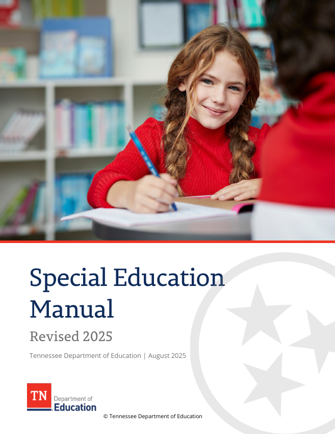
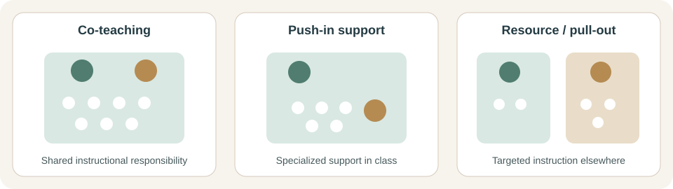
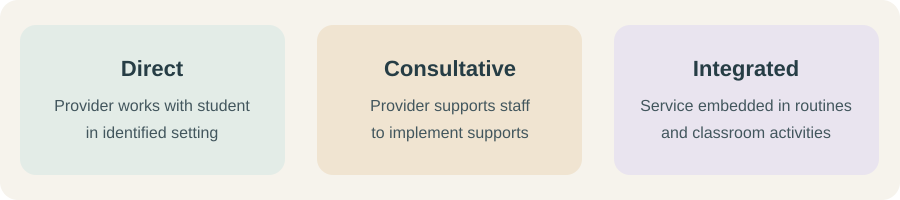

Explore the three artifacts
These are the original resources adapted into the LRE Menu. Preview each source below, then select it to open the original image, the supplied TN PULSE content, or the full Tennessee manual. The interactive redesign begins immediately after these sources.

The Placement Continuum
See the inverted pyramid that inspired the menu-style redesign.
View original graphic ↗TN PULSE Services Page
Read a clean reference version of the provided training-page content.
View supplied page content ↗
TN Special Education Manual
Open the complete 2025 manual; the pamphlet draws especially on pages 51–68.
View full manual ↗What was transformed?
The continuum shows the settings; the manual explains the decision-making and service considerations; TN PULSE shows how supports, services, and LRE are documented. The redesign connects all three in a needs-first, nonsequential menu.
What does the student need?
The starting point is not a classroom label or an available staff position. It is the student's present levels, goals, progress data, and participation in core instruction.
Present levels
Strengths, needs, academic and functional performance, and the effect of disability.
Goals & instruction
Skills requiring specially designed instruction, plus access to grade-level core content.
Evidence
Progress monitoring, evaluation findings, observed responses to supports, and educational benefit.
Team perspectives
Parent and student input, teachers, and relevant service providers.
Questions to ask before changing environments
Can the student participate satisfactorily in general education with supplementary aids and services? What supports would teachers need? What core instruction might be missed if the student leaves? What evidence supports the proposed change?
Tennessee Special Education Manual (2025), pp. 51, 64–67. The manual emphasizes core instruction, individualized data, the least dangerous assumption, and the IEP team's responsibility for LRE decisions.
The placement menu
Choose a setting on the left. Each opens nested descriptions of what instruction, collaboration, and related supports might look like. The setting is not the service, and students may receive different services across the day.
What the original continuum shows
Artifact 1: the supplied inverted-pyramid placement continuum. Retained as an original for comparison, not as a required progression.
The pyramid makes the range of settings visible, but it can be read as a ladder. This redesign uses selectable menu entries instead. The resource and self-contained labels in the graphic are descriptions of programs, not universal placement definitions.
Manual, pp. 65–67; IDEA, 34 CFR §300.114.
Service & delivery menu
A student's program may combine direct instruction, integrated services, consultation, related services, accommodations, and staff supports. These are not themselves separate placement rungs.

Co-teaching
Two educators share meaningful instructional responsibility. Team, station, parallel, and alternative teaching are possible arrangements. One teach/one assist should not be the permanent default.
Push-in
Specially designed instruction or targeted support occurs in the general education classroom, when appropriate to the IEP.
Pull-out / resource
Specially designed instruction occurs in another setting for a defined purpose. The team considers what core instruction is missed.
Illustrative service models, not official Tennessee categories or guarantees that a given model is appropriate.
How related services may be delivered

Speech-language
Communication supports may be individual, small group, classroom-integrated, or consultative, based on needs.
Occupational therapy
May address educational access, participation, motor, or functional needs through direct or consultative approaches.
Physical therapy
May address mobility, positioning, access, and participation in the educational environment.
Other services
Transportation, counseling, interpreting, orientation and mobility, and other IDEA-related services may be needed.
In-person vs. virtual consultation
In person: observation, modeling, co-planning, and review of classroom supports. Virtual: secure video meetings, collaborative documents, or review of progress data. The delivery method should fit the service, protect confidentiality, and allow effective implementation.
Remote consultation is not the same as homebound placement.
Supports that travel with the student
Accommodations, assistive technology, behavior supports, staff training, communication systems, and program modifications may be relevant in multiple settings. The IEP identifies which are necessary and where they apply.
Manual, pp. 51–64, especially supports for school personnel, assistive technology, accommodations, modifications, and special education/related services. The delivery-mode illustrations are explanatory examples.
Where it goes in TN PULSE
The supplied TN PULSE training screen organizes the decisions that follow from student needs and IEP team deliberation. It is a documentation interface, not a placement-selection algorithm.
What must staff learn or coordinate to implement the IEP?
Which devices or services support educational access?
Which adjustments apply to instruction and assessments?
What changes to the program are required?
Which specially designed instruction is needed, with appropriate service details?
What additional services are required for educational benefit?
Is individualized transportation required?
Explain nonparticipation with nondisabled peers in class, extracurricular and nonacademic activities, and home school when applicable.
Displays average daily service hours by setting; it is not an exact daily schedule.
Artifact 2: supplied TN PULSE university-training screen, “Supplementary Aids, Services, and LRE.” Field descriptions are summarized, not reproduced as a working TN PULSE form.